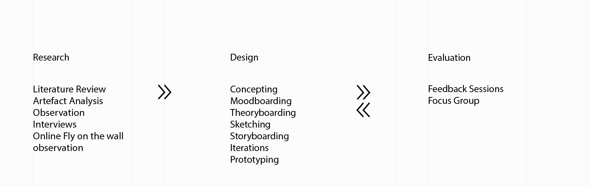

Overview
Problem Statement
One of the central tenets of smart city technologies is the integration of IoT sensors that facilitate non-stop data gathering, keeping an ever-present gaze on to the city. From traffic control, garbage bins, to pollution and gunshot detectors, the city is turned into always sensing and watching megastructure. As the city expands its ever-present gaze on every movement, it becomes more and more difficult for the average citizen to know the location and status of these sensors, what data is being collected, where it is stored, how long it is stored and for what purposes. The invisible gaze of these IoT sensors turns people into a data point incapable of sensing, a number encoding movements, colour, identity, location, time etc.
I wanted to invok critical mode of inquiry into the emergent digital infrastructure while serving as a point of reflection and conversation around issues of surveillance, control, and citizenship.
Research Question
How can we create affordances for awareness, framing how we understand, question, and critique the idea of all seeing and all knowing smart city in the context of public surveillance?
Design Goals
We want to design artefacts that will turn the gaze back on the city, and while doing so will act as a point of reflection and conversation around issues of surveillance, control, and citizenship.
Project Timeline
It's a two semester project where we are doing formative research in the first semester followed by concepting and ideation. The upcoming semester will be focused on hi-fidelity prototyping, evalutation and iteration.
Theory & Praxis
The philosophcal underpinning is where critical design finds it's power from. It was extremely necessary that the literature review included theoretical study of the history of the surveillance, watching and being watched and how it has evolved to contextualise the present in social-political flow of events.

Research
Literature Review
The formative research included both theoretical work and the existing design work that has been done to either explain or protest surveillance.
Comparative Study
The next step was to conduct a comparative study of existing work ranging from wearables, digital installations to artworks that has been done to critique and resist surveillance. Regarding methodologies and outcomes, most of the existing work broadly fell under the following categories.
Activism, Cautionary Tales
,Conceptual Design, Contestable Futures, Design Fiction, Interrogative Design, Radical Design, Art
and Speculative Design.
Field Study
To better understand the surveillance spatially, what it looks like and its pervasiveness, I conducted a field study of North Avenue. North Avenue in Atlanta has always been a focus of smart city and henceforth has led to installation of a lor of IoT sensors etc.